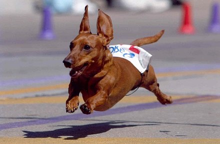

Classification
While classified in the hound group or scent hound group in the United States and Great Britain, the breed has its own group in the countries which belong to the World Canine Federation. Many dachshunds, especially the wire-haired subtype, may exhibit behavior and appearance similar to the terrier group of dogs. An argument can be made for the scent (or hound) group classification because the breed was developed to use scent to trail and hunt animals, and probably descended from the Saint Hubert Hound like many modern scent hound breeds such as bloodhounds and Basset Hounds; but with the persistent personality and love for digging that probably developed from the terrier, it can also be argued that they could belong in the terrier, or "earth dog", group.
Characteristics
Appearance
A typical dachshund is long-bodied and muscular with short stubby legs. Its front paws are disproportionately large, being paddle-shaped and particularly suitable for digging. Its skin is loose enough not to tear while tunneling in tight burrows to chase prey. Its snout is long.
Coat and color
There are three dachshund coat varieties: smooth coat (short hair), long-haired, and wire-haired.[15] Longhaired dachshunds have a silky coat and short featherings on legs and ears. Wire-haired dachshunds are the least common coat variety in the United States (although it is the most common in Germany) and the most recent coat to appear in breeding standards.[15] Dachshunds have a wide variety of colors and patterns, the most common one being red. Their base coloration can be single-colored (either red or cream), tan pointed (black and tan, chocolate and tan, blue and tan, or isabella and tan), and in wire-haired dogs, a color referred to as wild boar. Patterns such as dapple (merle), sable, brindle and piebald also can occur on any of the base colors. Dachshunds in the same litter may be born in different coat colors depending on the genetic makeup of the parents.
The Dachshund Club of America (DCA) and the American Kennel Club (AKC) consider Double Dapple to be out of standard and a disqualifying color in the show ring. Piebald is now a recognized color in the Dachshund Club of America (DCA) breed standard.
Dogs that are double-dappled have the merle pattern of a dapple, but with distinct white patches that occur when the dapple gene expresses itself twice in the same area of the coat. The DCA excluded the wording "double-dapple" from the standard in 2007 and now strictly uses the wording "dapple" as the double dapple gene is commonly responsible for blindness and deafness.

Eye color
Light-colored dachshunds can sport amber, light brown, or green eyes; however, kennel club standards state that the darker the eye color, the better. Dapple and double dapple dachshunds can have multi-coloured "wall" eyes with fully blue, partially blue or patched irises owing to the effect of the dapple gene on eye pigmentation expression. "Wall" eye is permissible according to DCA standards but undesirable by AKC standards.
Temperament
Dachshunds can be stubborn and refuse commands, especially if chasing a small animal which they have a propensity for. As dachshunds were originally used as badger hunters they have a keen sense for chasing smaller animals. Dachshunds are often stubborn, making them a challenge to train.
Dachshunds can be aggressive to strangers and other dogs. Despite this, they are rated in the intelligence of dogs as an average working dog with a persistent ability to follow trained commands 50% of the time or more. They can have a loud bark. Some bark quite a lot and may need training to stop, while others will not bark much at all. Dachshunds can be standoffish toward strangers. A Japanese study found the Miniature Dachshund to have higher rates of refusing to move whilst on a walk, barking at outside noises whilst inside, barking at strangers visiting their home, separation anxiety, inappropriate elimination (faecal and urinary incontinence), hesitancy to approach unknown humans and canines, and aggression towards family members, highlighting the breed's stubbornness and aggression.
Health
The breed is prone to spinal problems, especially intervertebral disk disease (IVDD), due in part to an extremely long spinal column and short rib cage. The risk of injury may be worsened by obesity, jumping, rough handling, or intense exercise, which place greater strain on the vertebrae. About 20 to 25% of dachshunds will develop IVDD. Dachshunds with a number of calcified intervertebral discs at a young age have a higher risk of developing disc disease in later life. In addition, studies have shown that development of calcified discs is highly heritable in the breed.
In addition to back problems, the breed is prone to patellar luxation where the kneecap can become dislodged. Dachshunds may also be affected by osteogenesis imperfecta (brittle bone disease). The condition seems to be mainly limited to wire-haired Dachshunds, with 17% being carriers. A genetic test is available to allow breeders to avoid breeding carriers to carriers. In such pairings, each puppy will have a 25% chance of being affected.
Life expectancy
A 2018 study in Japan of pet cemetery data put the Miniature Dachshund life expectancy at 13.9 years compared to 13.7 overall and 15.1 for crossbreeds.A 2024 study in the UK found a life expectancy of 13.2 years for the breed compared to an average of 12.7 for purebreeds and 12 for crossbreeds with the Miniature Dachshund found to have a life expectancy of 14 years. A 2024 Italian study found a life expectancy of 11.5 years for the breed compared to 10 years overall.A 2005 Swedish study of insurance data found 28% of Dachshund died by the age of 10, less than the overall rate of 35% of dogs dying by the age of 10.